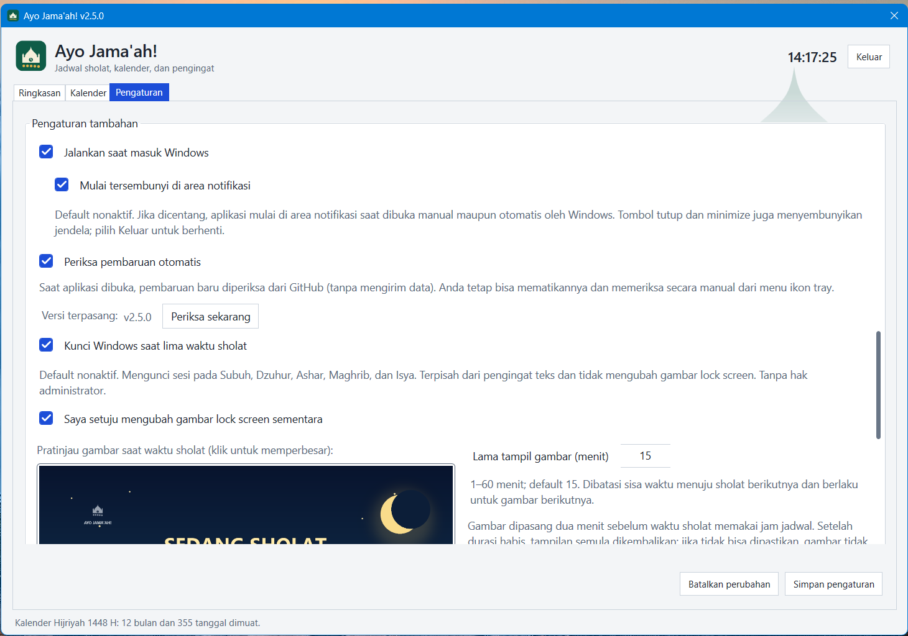
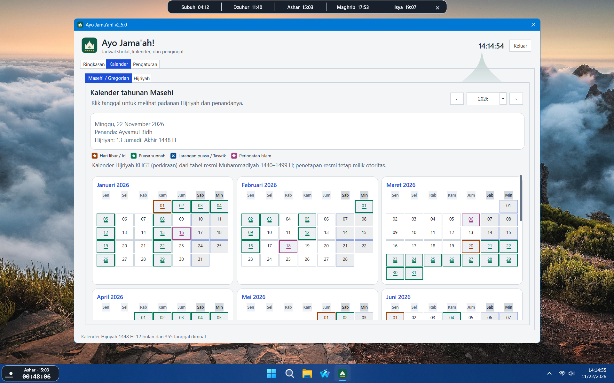
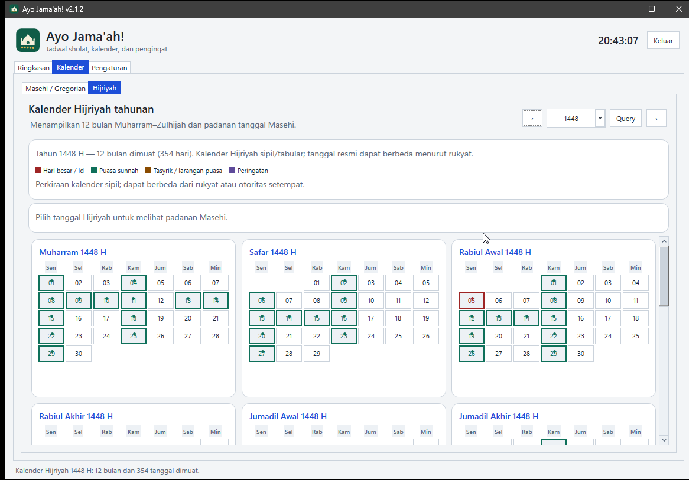
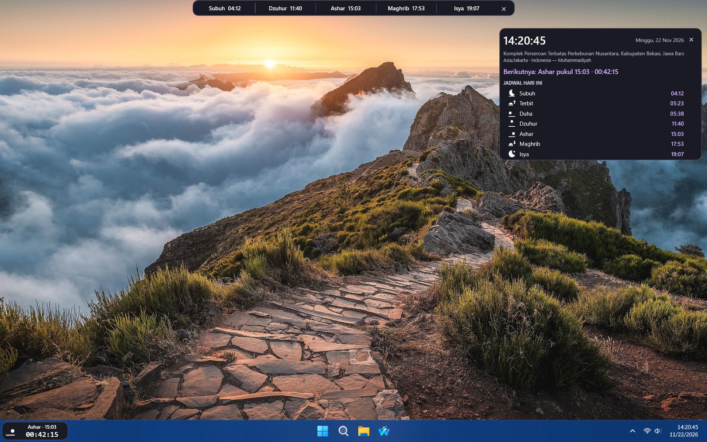

Ayo Jama'ah!
Jadwal sholat, kalender Hijriyah, widget, dan pengingat teks tanpa suara untuk Windows. Perhitungan jadwal dilakukan lokal lewat core Rust.
Build saat ini belum ditandatangani, jadi Windows SmartScreen bisa menampilkan peringatan. Unduhan selalu mengarah ke rilis terbaru.
Ayo Jama'ah! — jadwal sholat, kalender, dzikir, dan pengingat untuk Windows. Versi terbaru 2.6.0.

Tangkapan layar







Fitur utama
- Jadwal sholat harian dengan pilihan metode perhitungan, zona waktu, koreksi menit, dan mdpl.
- Kalender Masehi dan Hijriyah, widget desktop, serta panel taskbar.
- Pengingat teks tanpa suara/adzan dan penguncian Windows saat waktu sholat.
- Lokasi manual, data offline, perkiraan jaringan, atau Windows Location Services; instalasi baru mencoba deteksi lokasi otomatis.
- Pencarian nama tempat offline (GeoNames + hierarki wilayah Kemendagri). Paket data global lengkap dan Nominatim online bersifat opsional, dengan fallback offline.
- Paket self-contained lebih ringan: payload runtime dipangkas, tray native tanpa WinForms, dan installer tersedia dalam varian universal/x64/x86.